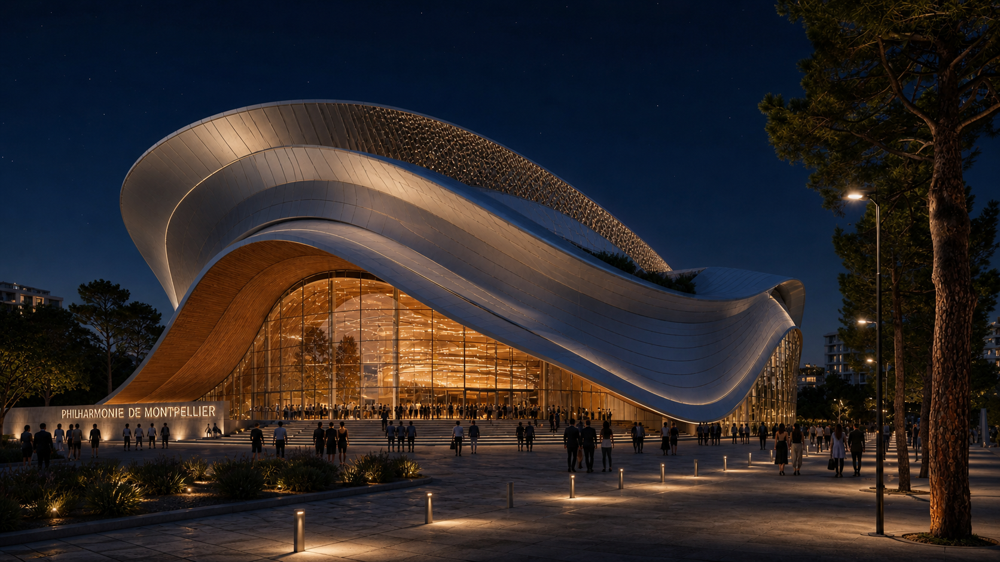
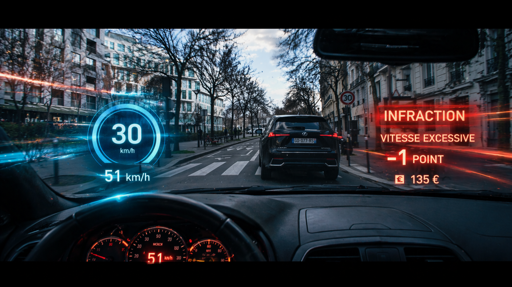
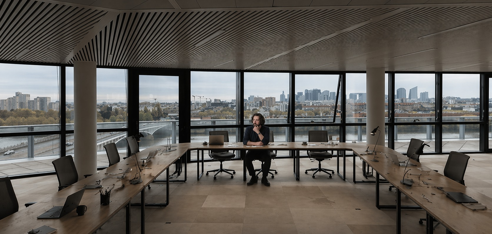

01
Time-lapse and location validation
Location potential / Défense apartment with a view

02
Fictional architecture in a real city
Philharmonie / Production feasibility

03
Windshield VFX and driving sequence
Live-action + VFX alignment

04
Rapid action visualization
Operational storyboard / Parking sequence
05
Drawing-to-life integration
Pencil jellyfish / live-action VFX study

06
Invisible AI as a production solution
Long-lens secondary element

07
Set transformation previsualization
Character continuity / VFX alignment

08
Super 8 / 1977
Period texture study